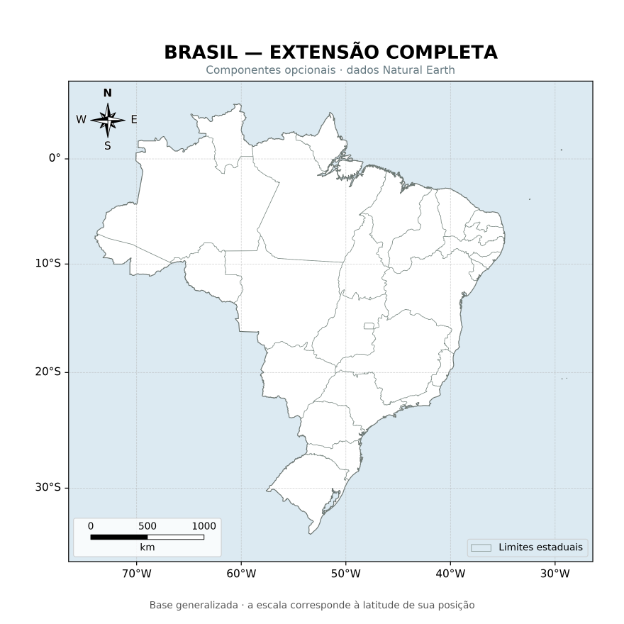
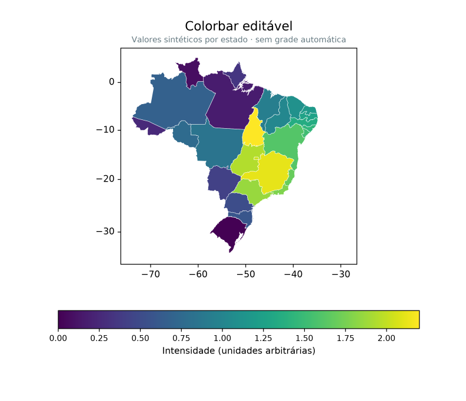
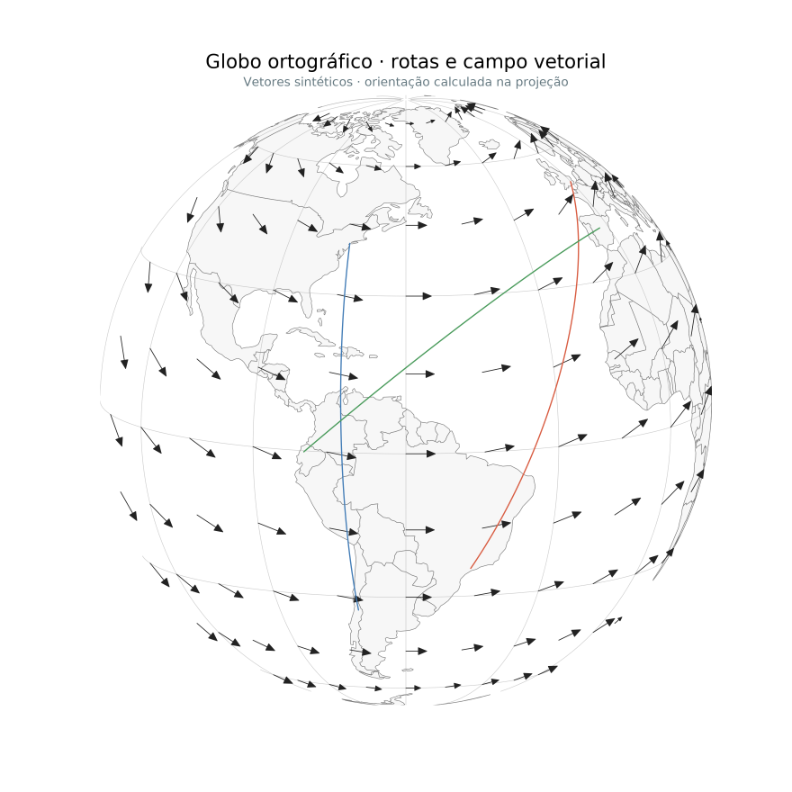
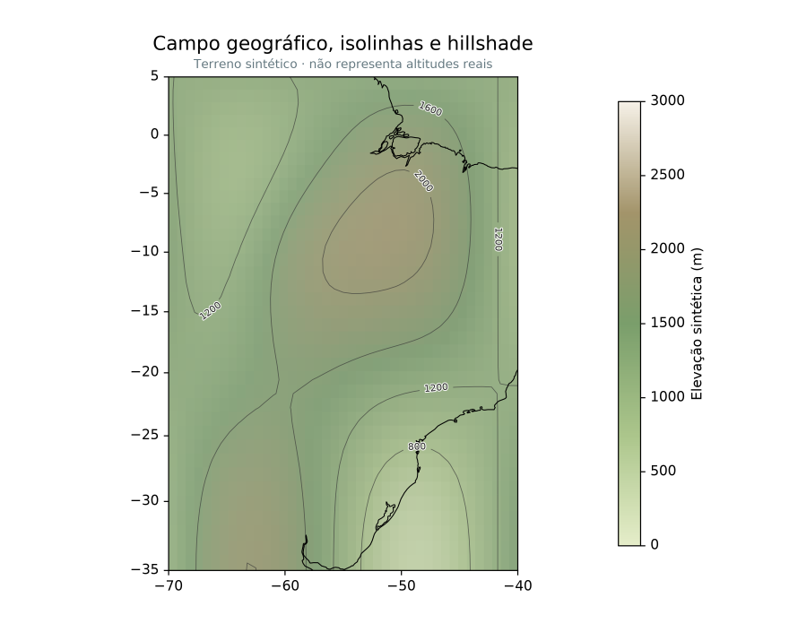

Maps made with Azimlib
These figures use Azimlib 0.2.0 geometry, composition and PNG rendering. They are committed so that the README images work in a fresh checkout. Natural Earth supplies geographic boundaries and rivers; other values are explicitly synthetic. This is not a map of verified navigation classes or measured terrain elevation.
Political map

Country/state boundaries, geographic ticks, legend, scale and orientation. Source: regions.py.
Thematic map and horizontal colorbar

Scalar values per feature, continuous mapping, editable ticks and colorbar.
Source: scientific.py, horizontal_example().
Orthographic globe

An independent spherical projection, graticule, routes and projected vectors.
This is a two-dimensional projection, not a three-dimensional terrain viewer.
Source: scientific.py, globe_example().
Scalar field, hillshade and isolines

Raster field, shading, contours, inline labels, coastline and color scale.
The elevation field is synthetic.
Source: scientific.py, terrain_example().
Reproduce
python -m pip install -e ".[png]"
python tools/build_readme_showcase.py
The builder calls the existing examples and Azimlib's renderer, then assembles the README overview with Pillow. It does not import Matplotlib. PNG bytes can vary with dependency/platform versions; the manifest records the currently committed files, not a guarantee of identical future bytes. Original composition/code is BSD-3-Clause; third-party notices retain the separate data, palette and font terms.
The extended gallery documents more reproducible examples; its generated local images are not all committed. Run its generator to obtain the extended PNG/SVG/HTML previews.